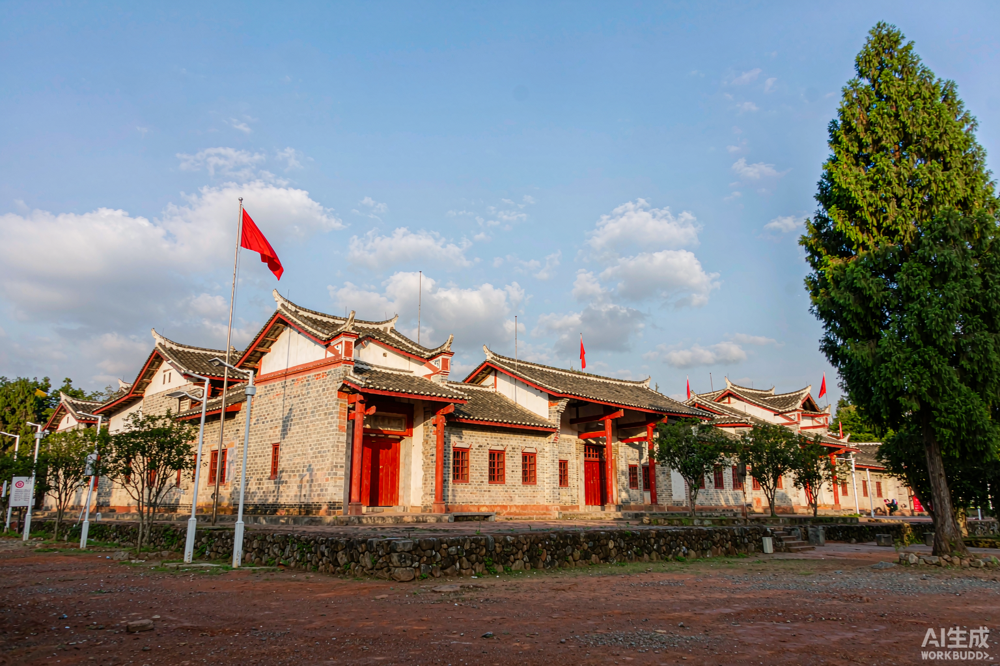

每一片热土，都镌刻着中国共产党的奋斗足迹 · 点击进入景点详解
星星之火，从这里开始燎原
中国第一个农村革命根据地。八角楼的灯光、黄洋界的炮声、朱毛会师的红旗——"井冈山精神"由此写进中国革命的基因。
走进井冈山 →
红色政权的第一缕曙光
中华苏维埃共和国临时中央政府在此成立。叶坪的谢家祠、沙洲坝的红井、云石山的告别——人民共和国从这里走来。
走进瑞金 →
一声枪响，人民军队诞生
八一南昌起义打响了武装反抗国民党反动派的第一枪。八一广场、起义纪念馆、总指挥部旧址——"八一"从此成为这座城市的名字。
走进南昌 →十六个故事，精神血脉代代相传 · 更多见「红色故事」页
平台初心
赣水红途由江西学子自发维护，所有内容免费开放。历史资料严格考证，实景图片还原革命现场，只为让红色记忆不被时间冲淡。